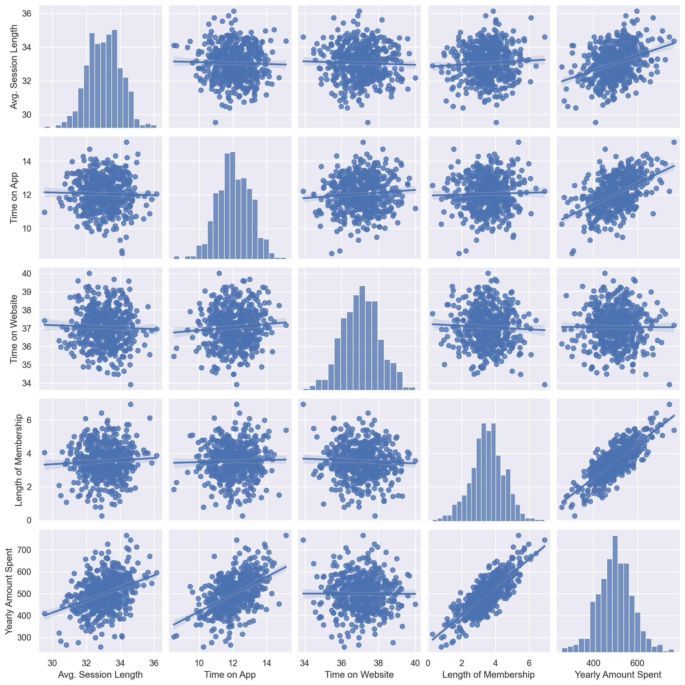
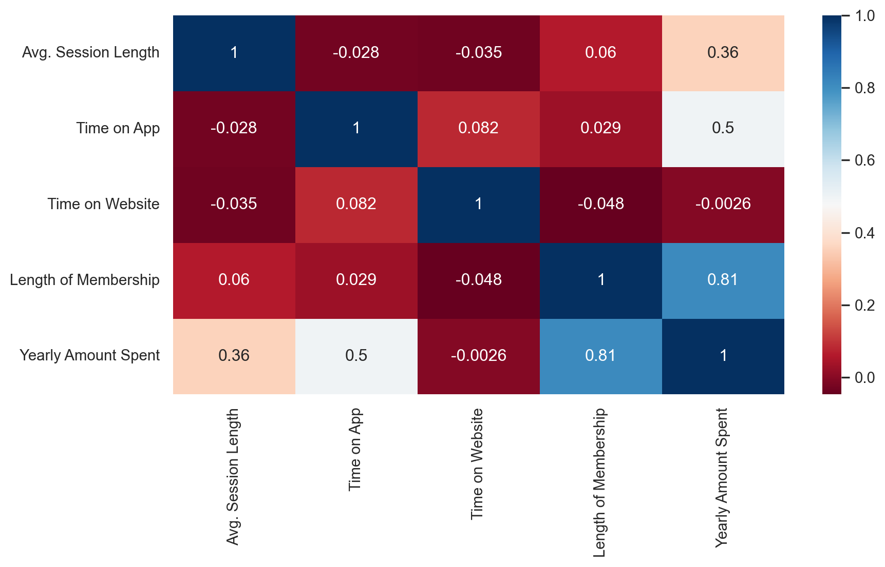
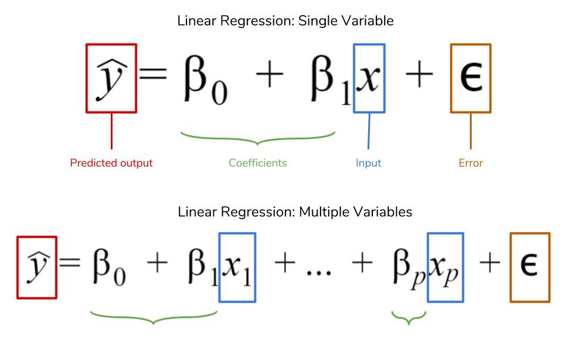

Linear regression is a statistical method used in data science and machine learning for predictive analysis.
It establishes a linear relationship between an independent variable (predictor) and a dependent variable (outcome) for prediction.
The method is suitable for continuous or numeric variables like sales, salary, age, etc.
Importance in Various Fields:
Used in stock market forecasting, portfolio management, scientific analysis, and more.
A simple representation is a sloped straight line in a graph, depicting the best fit line for a set of data.
Benefits of Linear Regression:
Easy to implement and interpret.
Scalable and optimal for online settings due to its computational efficiency.
Linear Regression Equation:
The equation Y = mX + b, where ‘m’ is the slope and ‘b’ is the intercept, describes the relationship. In machine learning, it’s often expressed as y(x) = p0 + p1 x, where p0 and p1 are parameters to be determined.
Types of Linear Regression:
Simple Linear Regression:
Definition: Simple Linear Regression is a statistical method that allows us to summarize and study relationships between two continuous (quantitative) variables. This method assumes a linear relationship between the dependent variable and the independent variable.
Equation: Y = β0 + β1 * X + ε
Y: Dependent variable
X: Independent variable
β0: Intercept of the regression line
β1: Slope of the regression line
ε: Error term
Application: For example, predicting the price of a house (dependent variable) based on its size (independent variable).
Multiple Linear Regression:
Definition: Multiple Linear Regression is an extension of simple linear regression and is used to predict the outcome of a dependent variable based on the value of two or more independent variables. This method helps in understanding how changes in independent variables are associated with changes in the dependent variable.
β1, β2, …, βn: Slopes for each independent variable
ε: Error term
Application: Predicting a person’s weight based on their height, age, and diet (three independent variables).
Logistic Regression:
Definition: Logistic Regression is a statistical method for analyzing a dataset in which there are one or more independent variables that determine an outcome. The outcome is measured with a dichotomous variable (in which there are only two possible outcomes). It is used for predicting the probability of a binary outcome based on one or more predictor variables.
Application: Determining whether an email is spam or not spam, based on features like the email’s content, sender, etc.
Ordinal Regression:
Definition: Ordinal Regression is used when the dependent variable is ordinal, meaning it reflects a scale of magnitude. It models the relationship between a set of predictor variables and an ordinal scale dependent variable, where the categories have a natural order, but the intervals between them are not assumed to be equidistant.
Characteristics: The categories have a ranked order, but the intervals between the ranks are not necessarily equal.
Application: Rating a movie as poor, fair, good, very good, and excellent. Here, the ratings have a natural order but the difference between each category is not quantified.
Multinomial Logistic Regression:
Definition: Multinomial Logistic Regression is a classification method that generalizes logistic regression to multiclass problems, i.e., where the dependent variable can have more than two possible nominal (unordered) outcomes. It is used when the outcome involves more than two categories.
Characteristics: Similar to logistic regression, but suitable for more than two classes.
Application: Predicting the choice of transportation (like car, bus, train, bike) based on factors like distance, cost, and time.
Example: Yearly Amount Spent Prediction
Import Libraries and Reading Data
import numpy as npimport pandas as pdimport matplotlib.pyplot as pltimport seaborn as snspd.set_option('display.float_format', lambda x: '%.2f'% x)from sklearn.linear_model import LinearRegressionfrom sklearn.metrics import mean_squared_error, mean_absolute_errorfrom sklearn.model_selection import train_test_split, cross_val_scoredf = pd.read_csv("R:/Blog/posts/linearRegression/Ecommerce Customers.csv")df.head()
Email
Address
Avatar
Avg. Session Length
Time on App
Time on Website
Length of Membership
Yearly Amount Spent
0
mstephenson@fernandez.com
835 Frank Tunnel\nWrightmouth, MI 82180-9605
Violet
34.50
12.66
39.58
4.08
587.95
1
hduke@hotmail.com
4547 Archer Common\nDiazchester, CA 06566-8576
DarkGreen
31.93
11.11
37.27
2.66
392.20
2
pallen@yahoo.com
24645 Valerie Unions Suite 582\nCobbborough, D...
Bisque
33.00
11.33
37.11
4.10
487.55
3
riverarebecca@gmail.com
1414 David Throughway\nPort Jason, OH 22070-1220
SaddleBrown
34.31
13.72
36.72
3.12
581.85
4
mstephens@davidson-herman.com
14023 Rodriguez Passage\nPort Jacobville, PR 3...
MediumAquaMarine
33.33
12.80
37.54
4.45
599.41
The variables to be used in the data were determined.
##################### Columns #####################
Index(['Avg. Session Length', 'Time on App', 'Time on Website',
'Length of Membership', 'Yearly Amount Spent'],
dtype='object')
##################### Shape #####################
(500, 5)
##################### Types #####################
Avg. Session Length float64
Time on App float64
Time on Website float64
Length of Membership float64
Yearly Amount Spent float64
dtype: object
##################### Head #####################
Avg. Session Length Time on App Time on Website Length of Membership \
0 34.50 12.66 39.58 4.08
1 31.93 11.11 37.27 2.66
2 33.00 11.33 37.11 4.10
3 34.31 13.72 36.72 3.12
4 33.33 12.80 37.54 4.45
Yearly Amount Spent
0 587.95
1 392.20
2 487.55
3 581.85
4 599.41
##################### Tail #####################
Avg. Session Length Time on App Time on Website Length of Membership \
495 33.24 13.57 36.42 3.75
496 34.70 11.70 37.19 3.58
497 32.65 11.50 38.33 4.96
498 33.32 12.39 36.84 2.34
499 33.72 12.42 35.77 2.74
Yearly Amount Spent
495 573.85
496 529.05
497 551.62
498 456.47
499 497.78
##################### NA #####################
Avg. Session Length 0
Time on App 0
Time on Website 0
Length of Membership 0
Yearly Amount Spent 0
dtype: int64
##################### Quantiles #####################
count mean std min 0% 5% 50% 95% \
Avg. Session Length 500.00 33.05 0.99 29.53 29.53 31.45 33.08 34.59
Time on App 500.00 12.05 0.99 8.51 8.51 10.53 11.98 13.67
Time on Website 500.00 37.06 1.01 33.91 33.91 35.46 37.07 38.78
Length of Membership 500.00 3.53 1.00 0.27 0.27 1.81 3.53 5.08
Yearly Amount Spent 500.00 499.31 79.31 256.67 256.67 376.29 498.89 628.15
99% 100% max
Avg. Session Length 35.43 36.14 36.14
Time on App 14.22 15.13 15.13
Time on Website 39.25 40.01 40.01
Length of Membership 5.84 6.92 6.92
Yearly Amount Spent 701.00 765.52 765.52
A scatterplot to observe the relationship between the variables was created.
sns.pairplot(df, kind ="reg")

Analysis of Variable Types
It is necessary to determine the types of variables. Thus, we can determine the types of the variables and make them suitable for the model.
It gives the names of the numeric, categorical but cardinal variables in the data set.
cat_cols: Categorical variable list
num_cols: Numeric variable list
cat_but_car: Categorical but cardinal variable list
The function named grab_col_names helps to determine the types of variables.
def grab_col_names(dataframe, cat_th=10, car_th=20):# cat_cols, cat_but_car cat_cols = [col for col in dataframe.columns if dataframe[col].dtypes =="O"] num_but_cat = [col for col in dataframe.columns if dataframe[col].nunique() < cat_th and dataframe[col].dtypes !="O"] cat_but_car = [col for col in dataframe.columns if dataframe[col].nunique() > car_th and dataframe[col].dtypes =="O"] cat_cols = cat_cols + num_but_cat cat_cols = [col for col in cat_cols if col notin cat_but_car]# num_cols num_cols = [col for col in dataframe.columns if dataframe[col].dtypes !="O"] num_cols = [col for col in num_cols if col notin num_but_cat]print(f"Observations: {dataframe.shape[0]}")print(f"Variables: {dataframe.shape[1]}")print(f'cat_cols: {len(cat_cols)}')print(f'num_cols: {len(num_cols)}')print(f'cat_but_car: {len(cat_but_car)}')print(f'num_but_cat: {len(num_but_cat)}')return cat_cols, num_cols, cat_but_carcat_cols, num_cols, cat_but_car = grab_col_names(df)
Values that go far beyond the general trend in the data are called outliers. Especially in linear methods, the effects of outliers are more severe.Outliers cause bias in the data set.For all these reasons, it needs to be analyzed.
Values with high correlation affect the target variable to a similar extent. Therefore, we can eliminate one of the variables with high correlation between two variables and use the other.
When the data was examined, no variable with a high correlation of more than 90% was found.
def high_correlated_cols(dataframe, plot=False, corr_th=0.90): corr = dataframe.corr() cor_matrix = corr.abs() upper_triangle_matrix = cor_matrix.where(np.triu(np.ones(cor_matrix.shape), k=1).astype(bool)) drop_list = [col for col in upper_triangle_matrix.columns ifany(upper_triangle_matrix[col] > corr_th)]if plot:import seaborn as snsimport matplotlib.pyplot as plt sns.set(rc={'figure.figsize': (10, 5)}) sns.heatmap(corr, cmap="RdBu", annot=True) plt.show(block=True)return drop_listhigh_correlated_cols(df,plot=True)

[]
LINEAR REGRESSION

Linear regression models the relationship between dependent and independent variable/variables linearly.
In order to create the model, dependent and independent variables were defined.
X = df.drop('Yearly Amount Spent', axis=1) y = df[["Yearly Amount Spent"]]
Building the Model
Building the Model A train and test set by dividing the data into two is created . By training the model with one part and testing the model with the other part, it can be determined how successful the model is.
X_train, X_test, y_train, y_test = train_test_split(X, y, test_size=0.20, random_state=1)reg_model = LinearRegression().fit(X_train, y_train)# constant (b - bias)print(reg_model.intercept_)# coefficients (w - weights)print(reg_model.coef_)
---title: "Linear Regression"author: "Rahul Pulluri"date: "2023-11-26"image: "linear_regression.png"---## Definition:- Linear regression is a statistical method used in data science and machine learning for predictive analysis.- It establishes a linear relationship between an independent variable (predictor) and a dependent variable (outcome) for prediction.- The method is suitable for continuous or numeric variables like sales, salary, age, etc.## Importance in Various Fields:- Used in stock market forecasting, portfolio management, scientific analysis, and more.- A simple representation is a sloped straight line in a graph, depicting the best fit line for a set of data.## Benefits of Linear Regression:- Easy to implement and interpret.- Scalable and optimal for online settings due to its computational efficiency.## Linear Regression Equation:The equation Y = m*X + b, where 'm' is the slope and 'b' is the intercept, describes the relationship.In machine learning, it's often expressed as y(x) = p0 + p1 * x, where p0 and p1 are parameters to be determined.## Types of Linear Regression:### **Simple Linear Regression:****Definition:** Simple Linear Regression is a statistical method that allows us to summarize and study relationships between two continuous (quantitative) variables. This method assumes a linear relationship between the dependent variable and the independent variable.**Equation:** Y = β0 + β1 * X + ε- Y: Dependent variable- X: Independent variable- β0: Intercept of the regression line- β1: Slope of the regression line- ε: Error term**Application:** For example, predicting the price of a house (dependent variable) based on its size (independent variable).## **Multiple Linear Regression:****Definition:** Multiple Linear Regression is an extension of simple linear regression and is used to predict the outcome of a dependent variable based on the value of two or more independent variables. This method helps in understanding how changes in independent variables are associated with changes in the dependent variable.**Equation:** Y = β0 + β1 * X1 + β2 * X2 + ... + βn * Xn + ε- Y: Dependent variable- X1, X2, ..., Xn: Independent variables- β0: Intercept- β1, β2, ..., βn: Slopes for each independent variable- ε: Error term**Application:** Predicting a person's weight based on their height, age, and diet (three independent variables).## **Logistic Regression:****Definition:** Logistic Regression is a statistical method for analyzing a dataset in which there are one or more independent variables that determine an outcome. The outcome is measured with a dichotomous variable (in which there are only two possible outcomes). It is used for predicting the probability of a binary outcome based on one or more predictor variables.**Equation:** log(p/(1-p)) = β0 + β1 * X1 + ... + βn * Xn- p: Probability of the dependent event occurring- X1, ..., Xn: Predictor variables- β0: Intercept- β1, ..., βn: Coefficients for each predictor**Application:** Determining whether an email is spam or not spam, based on features like the email's content, sender, etc.## **Ordinal Regression:****Definition:** Ordinal Regression is used when the dependent variable is ordinal, meaning it reflects a scale of magnitude. It models the relationship between a set of predictor variables and an ordinal scale dependent variable, where the categories have a natural order, but the intervals between them are not assumed to be equidistant.**Characteristics:** The categories have a ranked order, but the intervals between the ranks are not necessarily equal.**Application:** Rating a movie as poor, fair, good, very good, and excellent. Here, the ratings have a natural order but the difference between each category is not quantified.## **Multinomial Logistic Regression:****Definition:** Multinomial Logistic Regression is a classification method that generalizes logistic regression to multiclass problems, i.e., where the dependent variable can have more than two possible nominal (unordered) outcomes. It is used when the outcome involves more than two categories.**Characteristics:** Similar to logistic regression, but suitable for more than two classes.**Application:** Predicting the choice of transportation (like car, bus, train, bike) based on factors like distance, cost, and time.## Example: Yearly Amount Spent Prediction**Import Libraries and Reading Data**```{python}import numpy as npimport pandas as pdimport matplotlib.pyplot as pltimport seaborn as snspd.set_option('display.float_format', lambda x: '%.2f'% x)from sklearn.linear_model import LinearRegressionfrom sklearn.metrics import mean_squared_error, mean_absolute_errorfrom sklearn.model_selection import train_test_split, cross_val_scoredf = pd.read_csv("R:/Blog/posts/linearRegression/Ecommerce Customers.csv")df.head()```The variables to be used in the data were determined.```{python}df = df.drop(['Email',"Address","Avatar"], axis=1) ```**Advanced Functional Exploratory Data Analysis**General structure of the data is analyzed```{python}def check_df(dataframe, head=5):print("##################### Columns #####################")print(dataframe.columns)print("##################### Shape #####################")print(dataframe.shape)print("##################### Types #####################")print(dataframe.dtypes)print("##################### Head #####################")print(dataframe.head(head))print("##################### Tail #####################")print(dataframe.tail(head))print("##################### NA #####################")print(dataframe.isnull().sum())print("##################### Quantiles #####################")print(dataframe.describe([0, 0.05, 0.50, 0.95, 0.99, 1]).T)check_df(df)```A scatterplot to observe the relationship between the variables was created.```{python}sns.pairplot(df, kind ="reg")```**Analysis of Variable Types**It is necessary to determine the types of variables. Thus, we can determine the types of the variables and make them suitable for the model.It gives the names of the numeric, categorical but cardinal variables in the data set.cat_cols: Categorical variable listnum_cols: Numeric variable listcat_but_car: Categorical but cardinal variable listThe function named grab_col_names helps to determine the types of variables.```{python}def grab_col_names(dataframe, cat_th=10, car_th=20):# cat_cols, cat_but_car cat_cols = [col for col in dataframe.columns if dataframe[col].dtypes =="O"] num_but_cat = [col for col in dataframe.columns if dataframe[col].nunique() < cat_th and dataframe[col].dtypes !="O"] cat_but_car = [col for col in dataframe.columns if dataframe[col].nunique() > car_th and dataframe[col].dtypes =="O"] cat_cols = cat_cols + num_but_cat cat_cols = [col for col in cat_cols if col notin cat_but_car]# num_cols num_cols = [col for col in dataframe.columns if dataframe[col].dtypes !="O"] num_cols = [col for col in num_cols if col notin num_but_cat]print(f"Observations: {dataframe.shape[0]}")print(f"Variables: {dataframe.shape[1]}")print(f'cat_cols: {len(cat_cols)}')print(f'num_cols: {len(num_cols)}')print(f'cat_but_car: {len(cat_but_car)}')print(f'num_but_cat: {len(num_but_cat)}')return cat_cols, num_cols, cat_but_carcat_cols, num_cols, cat_but_car = grab_col_names(df)```**Outlier Analysis**Values that go far beyond the general trend in the data are called outliers. Especially in linear methods, the effects of outliers are more severe.Outliers cause bias in the data set.For all these reasons, it needs to be analyzed.```{python}def outlier_thresholds(dataframe, col_name, q1=0.10, q3=0.90): quartile1 = dataframe[col_name].quantile(q1) quartile3 = dataframe[col_name].quantile(q3) interquantile_range = quartile3 - quartile1 up_limit = quartile3 +1.5* interquantile_range low_limit = quartile1 -1.5* interquantile_rangereturn low_limit, up_limitdef check_outlier(dataframe, col_name): low_limit, up_limit = outlier_thresholds(dataframe, col_name)if dataframe[(dataframe[col_name] > up_limit) | (dataframe[col_name] < low_limit)].any(axis=None):returnTrueelse:returnFalsefor col in num_cols:print(col, check_outlier(df, col))```Avg. Session Length FalseTime on App FalseTime on Website FalseLength of Membership FalseYearly Amount Spent False**Analysis Of Missing Values**Missing values may cause problems while setting up the model. It must be detected and necessary actions must be taken.No missing values were found for the relevant data.```{python}def missing_values_table(dataframe, na_name=False): na_columns = [col for col in dataframe.columns if dataframe[col].isnull().sum() >0] n_miss = dataframe[na_columns].isnull().sum().sort_values(ascending=False) ratio = (dataframe[na_columns].isnull().sum() / dataframe.shape[0] *100).sort_values(ascending=False) missing_df = pd.concat([n_miss, np.round(ratio, 2)], axis=1, keys=['n_miss', 'ratio'])print(missing_df, end="\n")if na_name:return na_columnsmissing_values_table(df)```Empty DataFrameColumns: [n_miss, ratio]Index: []**Correlation Analysis**Values with high correlation affect the target variable to a similar extent. Therefore, we can eliminate one of the variables with high correlation between two variables and use the other.When the data was examined, no variable with a high correlation of more than 90% was found.```{python}def high_correlated_cols(dataframe, plot=False, corr_th=0.90): corr = dataframe.corr() cor_matrix = corr.abs() upper_triangle_matrix = cor_matrix.where(np.triu(np.ones(cor_matrix.shape), k=1).astype(bool)) drop_list = [col for col in upper_triangle_matrix.columns ifany(upper_triangle_matrix[col] > corr_th)]if plot:import seaborn as snsimport matplotlib.pyplot as plt sns.set(rc={'figure.figsize': (10, 5)}) sns.heatmap(corr, cmap="RdBu", annot=True) plt.show(block=True)return drop_listhigh_correlated_cols(df,plot=True)```## LINEAR REGRESSIONLinear regression models the relationship between dependent and independent variable/variables linearly.In order to create the model, dependent and independent variables were defined.```{python}X = df.drop('Yearly Amount Spent', axis=1) y = df[["Yearly Amount Spent"]]```**Building the Model**Building the ModelA train and test set by dividing the data into two is created . By training the model with one part and testing the model with the other part, it can be determined how successful the model is.```{python}X_train, X_test, y_train, y_test = train_test_split(X, y, test_size=0.20, random_state=1)reg_model = LinearRegression().fit(X_train, y_train)# constant (b - bias)print(reg_model.intercept_)# coefficients (w - weights)print(reg_model.coef_)```Prediction of dependent variable```{python}y_pred = reg_model.predict(X_test)```## Evaluating Forecast Success!(rmse.png)```{python}np.sqrt(mean_squared_error(y_test, y_pred))```The ratio of independent variables description of dependent variable```{python}reg_model.score(X_test, y_test)```## Visualization of the ModelFinally, the actual values corresponding to the predicted values of the model are shown in the graph.```{python}y_pred = pd.DataFrame(y_pred)y_test = y_test.reset_index(drop=True)df_ = pd.concat([y_test,y_pred], axis=1)df_.columns = ["y_test","y_pred"]plt.figure(figsize=(15,10))plt.plot(df_)plt.legend(["ACTUAL VALUES" , "MODEL PREDICTION"])```